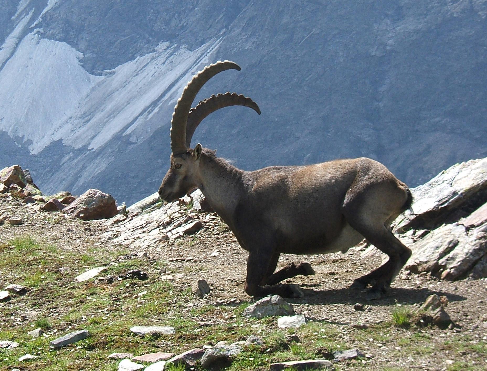
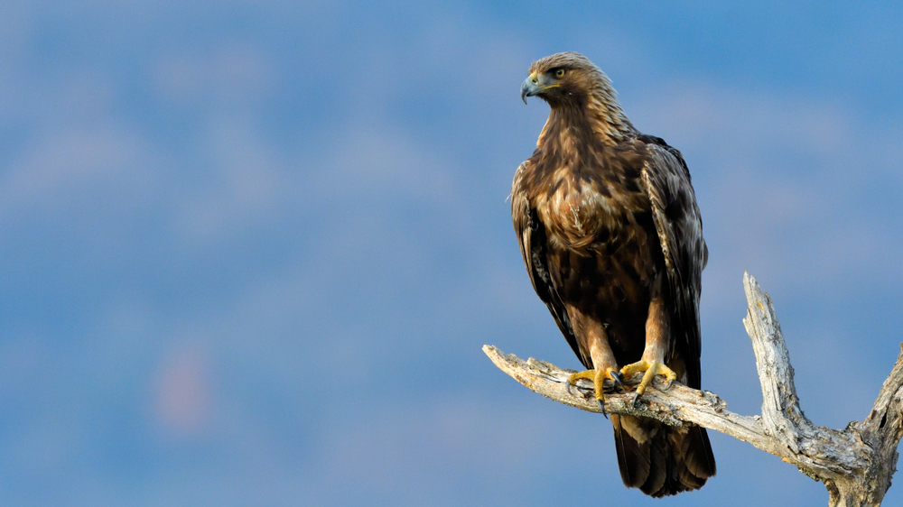
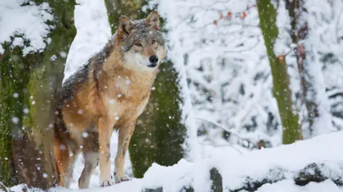
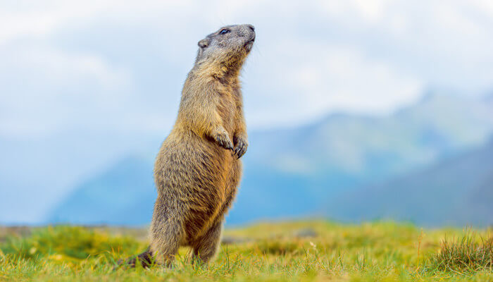
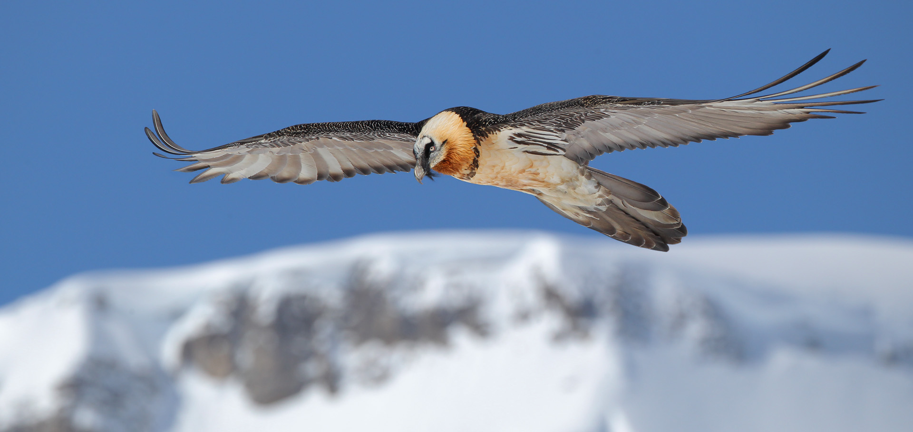

Switzerland's dramatic landscapes support a rich diversity of wildlife. From the high Alpine zones to the forested Jura mountains and the wetlands of the Mittelland, nature lovers will find extraordinary encounters. Switzerland protects around 12% of its territory as national parks and nature reserves.
Iconic Swiss Wildlife

Alpine Ibex (Steinbock)
The symbol of the Swiss Alps, nearly hunted to extinction by the 1800s but now thriving with around 17,000 individuals. Best spotted on rocky cliffs above 2,000m, especially in the Engadin and Bernese Oberland.

Red Deer (Hirsch)
Switzerland has over 40,000 red deer. They can be heard calling during the autumn rut (September–October) and seen in mountain forests. The Swiss National Park is the best place to see them.

Golden Eagle (Steinadler)
Around 350 breeding pairs of golden eagles soar over the Swiss Alps. With a wingspan up to 2.3m, they are truly spectacular. Look up when hiking above the treeline.

Wolf (Wolf)
Grey wolves returned to Switzerland naturally in the 1990s after 100 years of absence. Numbers are growing, and sightings — while rare — do occur in Graubünden and Valais.

Marmot (Murmeltier)
The rotund, sociable marmot is one of Switzerland's most loved animals. You'll hear their piercing whistle alarm calls in rocky Alpine meadows above 1,500m throughout the summer.

Bearded Vulture (Bartgeier)
Reintroduced to the Alps in 1986, the bearded vulture has the largest wingspan of any European bird (2.8m). Best seen soaring over the Swiss National Park and Aletsch area.
Swiss National Park
Switzerland's Only National Park
The Swiss National Park (Schweizerischer Nationalpark) in canton Graubünden is Switzerland's only true national park and one of the oldest in Europe (established 1914). It covers 170 km² of strictly protected Alpine wilderness in the Lower Engadin. No picking of plants, feeding of animals, or off-trail walking is permitted. The park hosts ibex, deer, chamois, eagles, and marmots in a truly wild setting. Access is from the village of Zernez.
Nature Reserves & Wetlands
- Aletsch Glacier UNESCO Area – Largest glacier in the Alps, surrounded by protected wilderness
- Klingnauer Stausee – Important bird reserve on the Rhine with hundreds of migratory species
- Fanel Nature Reserve – Wetlands on Lake Neuchâtel, vital for breeding birds
- Val Müstair – UNESCO Biosphere Reserve in Graubünden
- Entlebuch Biosphere – UNESCO Biosphere in central Switzerland, bogs and karst landscapes
Best Wildflowers
Swiss Alpine meadows burst with wildflowers from June to August. Look for edelweiss (on rocky slopes above 1,800m), gentians (brilliant blue), Alpine roses (rhododendrons), arnica, and the rare lady's slipper orchid in limestone areas of the Jura. The Schynige Platte Alpine Garden near Interlaken has over 650 Alpine plant species.